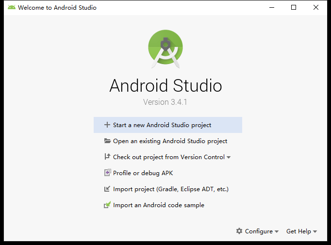
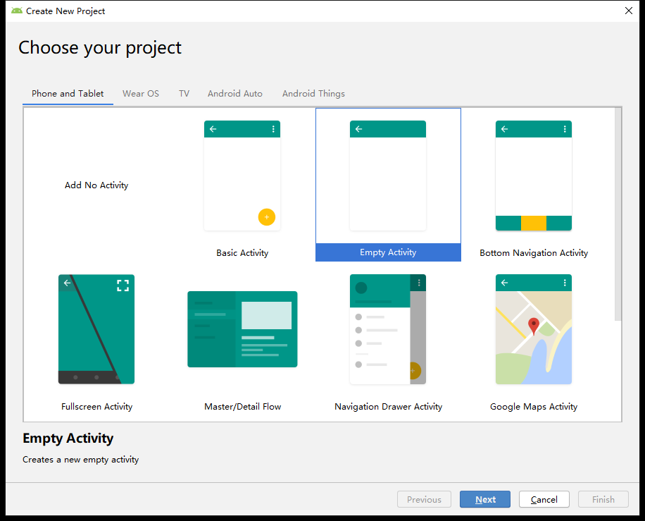
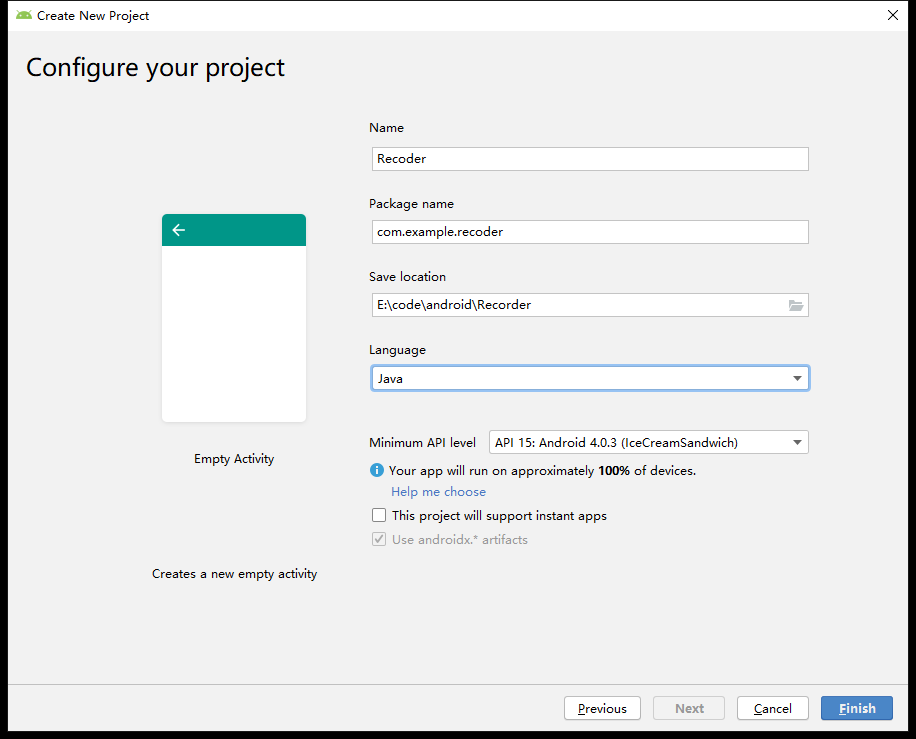
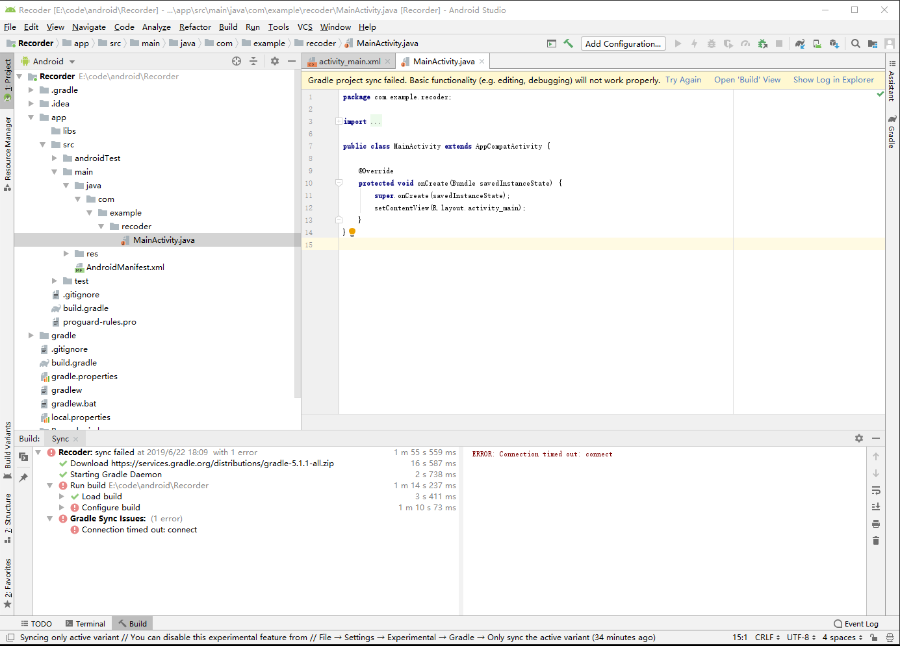
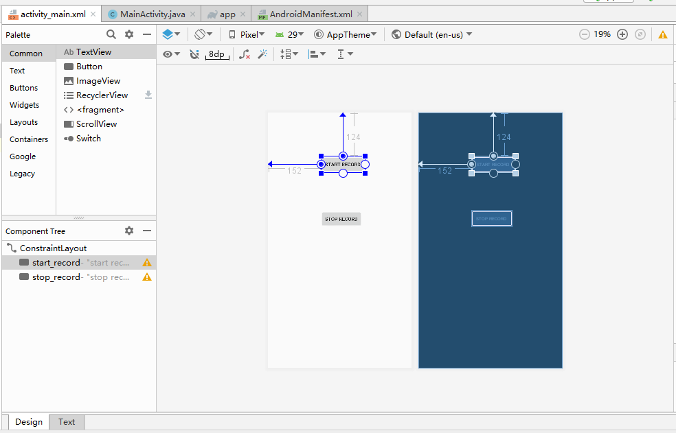
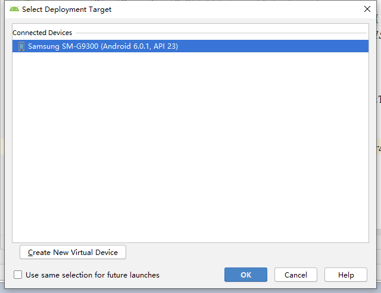
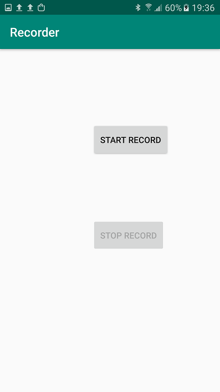
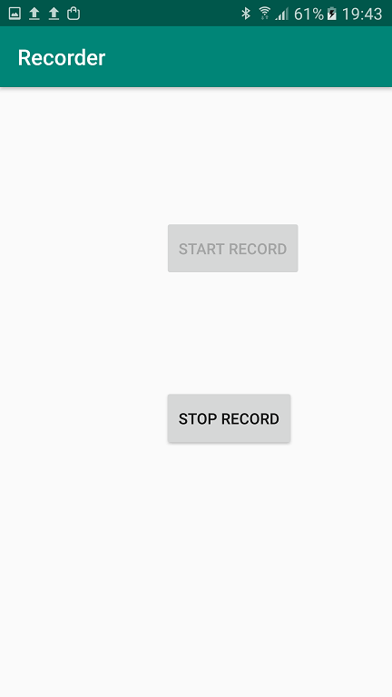

Android Development Basics
Since this document involves many sound-related experiments requiring hands-on operations, we need to use an Android application to implement recording and playback functionalities on a smartphone.
Installing Android Studio
First, install the Android development environment, Android Studio. Please follow the official installation guide at: https://developer.android.com/studio/install
Implementing Audio Recording and Playback Application
To develop a new app, first open the welcome screen of Android Studio:

Select "Start a new Android Studio project" to proceed to the project template selection page:

Here, choose "Empty Activity".
Set parameters for your project such as name, storage location, and programming language:

Then enter the development interface:

App Implementation
First, request microphone and storage permissions in the AndroidManifest.xml file:
<uses-permission android:name="android.permission.RECORD_AUDIO"/>
<uses-permission android:name="android.permission.WRITE_EXTERNAL_STORAGE"/>
<uses-permission android:name="android.permission.READ_EXTERNAL_STORAGE"/>
For Android 6.0 and above, runtime permission requests are also required. Implement the GetPermission() function and call it within the onCreate() method:
private void GetPermission() {
/* Insert code for runtime permission request here */
if (ActivityCompat.checkSelfPermission(this, Manifest.permission.RECORD_AUDIO) !=
PackageManager.PERMISSION_GRANTED ||
ActivityCompat.checkSelfPermission(this, Manifest.permission.WRITE_EXTERNAL_STORAGE) !=
PackageManager.PERMISSION_GRANTED ||
ActivityCompat.checkSelfPermission(this, Manifest.permission.READ_EXTERNAL_STORAGE) !=
PackageManager.PERMISSION_GRANTED) {
ActivityCompat.requestPermissions(this,
new String[]{android.Manifest.permission.RECORD_AUDIO,
android.Manifest.permission.WRITE_EXTERNAL_STORAGE,
Manifest.permission.READ_EXTERNAL_STORAGE}, 0);
}
}
Designing the User Interface
Add two buttons, "START RECORD" and "STOP RECORD", in activity_main.xml:

Corresponding code for the buttons will appear in the activity_main.xml file:
<Button
android:id="@+id/start_record"
android:layout_width="wrap_content"
android:layout_height="wrap_content"
android:layout_marginStart="152dp"
android:layout_marginLeft="152dp"
android:layout_marginTop="124dp"
android:text="start record"
app:layout_constraintStart_toStartOf="parent"
app:layout_constraintTop_toTopOf="parent" />
<Button
android:id="@+id/stop_record"
android:layout_width="wrap_content"
android:layout_height="wrap_content"
android:layout_marginStart="152dp"
android:layout_marginLeft="152dp"
android:layout_marginTop="108dp"
android:text="stop record"
app:layout_constraintStart_toStartOf="parent"
app:layout_constraintTop_toBottomOf="@+id/start_record" />
Use the android:id attribute to assign IDs to the buttons and android:text to set their displayed text. Button layout and position can be adjusted as needed.
In MainActivity, declare two corresponding Button variables:
Button StartRecord, StopRecord;
In the onCreate() method, associate these variables with the UI buttons and disable the "Stop Record" button initially:
StartRecord = (Button) findViewById(R.id.start_record);
StopRecord = (Button) findViewById(R.id.stop_record);
// Disable stop button before start is pressed
StopRecord.setEnabled(false);
Attach click listeners to both buttons:
StartRecord.setOnClickListener(new View.OnClickListener() {
@Override
public void onClick(View view) {
// Enable stop button and disable start button
StopRecord.setEnabled(true);
StartRecord.setEnabled(false);
Thread thread = new Thread(new Runnable() {
@Override
public void run() {
// Define filename for raw audio data
String name = Environment.getExternalStorageDirectory().getAbsolutePath() + "/myrecorder/raw.wav";
// Start recording and save raw data to file
StartRecord(name);
// Get current timestamp
Date now = Calendar.getInstance().getTime();
// Use timestamp to name final WAV file
String filepath = Environment.getExternalStorageDirectory().getAbsolutePath() + "/myrecorder/" + now.toString() + ".wav";
// Convert raw data into proper WAV format
copyWaveFile(name, filepath);
}
});
thread.start();
}
});
StopRecord.setOnClickListener(new View.OnClickListener() {
@Override
public void onClick(View view) {
// Stop recording
isRecording = false;
// Re-enable start button and disable stop button
StopRecord.setEnabled(false);
StartRecord.setEnabled(true);
}
});
Implementing the Recording Functionality
First, define global variables in MainActivity to control recording state and set recording parameters:
// Sample rate: 48 kHz
int SamplingRate = 48000;
// Stereo channel configuration
int channelConfiguration = AudioFormat.CHANNEL_IN_STEREO;
// 16-bit encoding
int audioEncoding = AudioFormat.ENCODING_PCM_16BIT;
// Flag indicating whether recording is active
boolean isRecording = false;
// Buffer size for reading from AudioRecord stream
int bufferSize = 0;
Now examine the implementation of the recording function:
// Start recording
public void StartRecord(String name) {
// Create file for raw data
file = new File(name);
// Delete if exists, then recreate
if (file.exists())
file.delete();
try {
file.createNewFile();
} catch (IOException e) {
throw new IllegalStateException("Failed to create " + file.toString());
}
try {
// Output streams for writing raw data
OutputStream os = new FileOutputStream(file);
BufferedOutputStream bos = new BufferedOutputStream(os);
DataOutputStream dos = new DataOutputStream(bos);
// Determine minimum buffer size based on audio parameters
bufferSize = AudioRecord.getMinBufferSize(SamplingRate, channelConfiguration, audioEncoding);
// Initialize AudioRecord instance
AudioRecord audioRecord = new AudioRecord(MediaRecorder.AudioSource.MIC, SamplingRate, channelConfiguration, audioEncoding, bufferSize);
// Buffer to hold recorded audio samples
byte[] buffer = new byte[bufferSize];
// Start recording
audioRecord.startRecording();
// Set recording flag
isRecording = true;
// Continuously read and write audio data while recording
while (isRecording) {
int bufferReadResult = audioRecord.read(buffer, 0, bufferSize);
for (int i = 0; i < bufferReadResult; i++) {
dos.write(buffer[i]);
}
}
// Stop recording and close streams
audioRecord.stop();
dos.close();
} catch (Throwable t) {
Log.e("MainActivity", "Recording failed");
}
}
Next, convert the raw recorded data into a properly formatted WAV file:
private void copyWaveFile(String inFileName, String outFileName) {
FileInputStream in = null;
FileOutputStream out = null;
long totalAudioLen = 0;
// WAV files include a 44-byte header; subtract 8 bytes for RIFF chunk info → 36 extra bytes
long totalDataLen = totalAudioLen + 36;
long longSampleRate = SamplingRate;
int channels = 2;
// Byte rate: 16 bits × sample rate × channels ÷ 8 bits per byte
long byteRate = 16 * SamplingRate * channels / 8;
byte[] data = new byte[bufferSize];
try {
in = new FileInputStream(inFileName);
out = new FileOutputStream(outFileName);
// Get actual size of raw audio data
totalAudioLen = in.getChannel().size();
totalDataLen = totalAudioLen + 36;
// Write WAV file header
WriteWaveFileHeader(out, totalAudioLen, totalDataLen, longSampleRate, channels, byteRate);
// Write raw audio data into WAV file
while (in.read(data) != -1) {
out.write(data);
}
in.close();
out.close();
} catch (FileNotFoundException e) {
e.printStackTrace();
} catch (IOException e) {
e.printStackTrace();
}
}
/**
* Writes the standard WAV file header to the output stream.
*/
private void WriteWaveFileHeader(FileOutputStream out, long totalAudioLen,
long totalDataLen, long longSampleRate, int channels, long byteRate)
throws IOException {
byte[] header = new byte[44];
header[0] = 'R'; // RIFF/WAVE header
header[1] = 'I';
header[2] = 'F';
header[3] = 'F';
header[4] = (byte) (totalDataLen & 0xff);
header[5] = (byte) ((totalDataLen >> 8) & 0xff);
header[6] = (byte) ((totalDataLen >> 16) & 0xff);
header[7] = (byte) ((totalDataLen >> 24) & 0xff);
header[8] = 'W';
header[9] = 'A';
header[10] = 'V';
header[11] = 'E';
header[12] = 'f'; // 'fmt ' subchunk
header[13] = 'm';
header[14] = 't';
header[15] = ' ';
header[16] = 16; // Format chunk length
header[17] = 0;
header[18] = 0;
header[19] = 0;
header[20] = 1; // Format type: PCM = 1
header[21] = 0;
header[22] = (byte) channels; // Number of channels (mono/stereo)
header[23] = 0;
header[24] = (byte) (longSampleRate & 0xff); // Sample rate
header[25] = (byte) ((longSampleRate >> 8) & 0xff);
header[26] = (byte) ((longSampleRate >> 16) & 0xff);
header[27] = (byte) ((longSampleRate >> 24) & 0xff);
header[28] = (byte) (byteRate & 0xff); // Byte rate
header[29] = (byte) ((byteRate >> 8) & 0xff);
header[30] = (byte) ((byteRate >> 16) & 0xff);
header[31] = (byte) ((byteRate >> 24) & 0xff);
header[32] = (byte) (2 * 16 / 8); // Block align
header[33] = 0;
header[34] = 16; // Bits per sample
header[35] = 0;
header[36] = 'd';
header[37] = 'a';
header[38] = 't';
header[39] = 'a';
header[40] = (byte) (totalAudioLen & 0xff); // Size of actual audio data
header[41] = (byte) ((totalAudioLen >> 8) & 0xff);
header[42] = (byte) ((totalAudioLen >> 16) & 0xff);
header[43] = (byte) ((totalAudioLen >> 24) & 0xff);
// Write header to file
out.write(header, 0, 44);
}
Running the Application
Since I configured the file path to store recordings inside a folder named "myrecorder", first create this directory in the root of your phone's external storage:
Alternatively, you may choose to save files directly in the root directory if you don't mind clutter.
Now run the app on a physical device. Connect your Android phone to the computer via USB and enable debugging. Click the Run button in Android Studio:
You should see your device listed—here, a Samsung phone:

Click "OK" to deploy the app. Since I placed the permission request in onCreate(), the app will immediately prompt for permissions upon launch:
Note: You can alternatively request permissions only when they are about to be used.
On the app interface, only the "Start Record" button is enabled initially:

After pressing "Start Record", recording begins, the "Stop Record" button becomes active, and "Start Record" is disabled:

After clicking "Stop Record", two files appear in the folder: one containing raw data and another a properly formatted WAV file:
Congratulations! You have successfully implemented an Android app that records audio into a WAV file. In the next chapter, we will explore how to read and visualize this recorded audio using MATLAB.